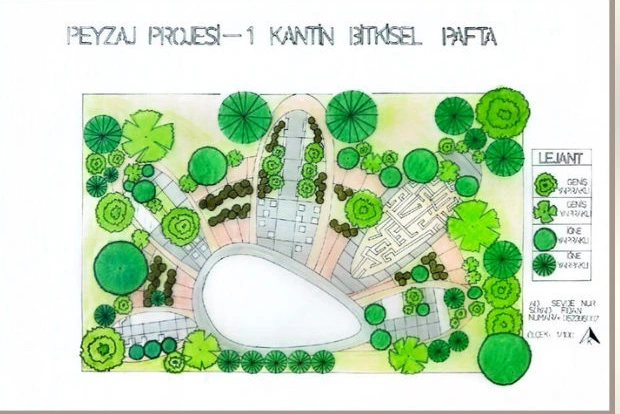

Biraz daha yakından ↗Sevde’nin dünyasına hoş geldin.Mekânlar.
Mekânlar.
Hikâyeler.
Aradaki her şey.
Peyzaj mimarlığı.
Mekânlar, fikirler ve bağlantılardan bir koleksiyon.
01
Üniversite Kantin Bahçesi Projesi

SEVDE
NUR FIDAN
Sosyal alan6 PARÇANUR FIDAN
Çalışma masasıBiraz merak.
Biraz merak.
Bir sürü bağlantı.
Parçaları hareket ettir. Merakının peşinden git. Klavyeyle: ok tuşları.
ÇizBirleştirKeşfet
Kutuları sürükle veya oklarla gez. Bir kutu aç, içindeki dünyayı keşfet.
01
Üniversite Kantin Bahçesi Projesi
SEVDE
NUR FIDAN
Sosyal alan6 PARÇANUR FIDAN
02
Tek Konut - Rektörün Evi

SEVDE
NUR FIDAN
Konut bahçesi6 PARÇANUR FIDAN
03
Toplu Konut Projesi - Bursa / Nilüfer

SEVDE
NUR FIDAN
Ortak yaşam8 PARÇANUR FIDAN
04
Kent Meydanı Projesi - Bursa / Özlüce

SEVDE
NUR FIDAN
Kamusal yaşam8 PARÇANUR FIDAN
05
Çocuk Oyun Alanı Sınır Elemanı

SEVDE
NUR FIDAN
Etkileşimli sınır6 PARÇANUR FIDAN
06
Kentsel Peyzaj Planlama - Bursa / Osmangazi - Nilüfer

SEVDE
NUR FIDAN
Yeşil altyapı8 PARÇANUR FIDAN
07
“Bir Can Daha” - Kedi Evi Tasarım Yarışması

SEVDE
NUR FIDAN
Bir Can Daha6 PARÇANUR FIDAN
Her mekân
bir bağlantıyla
başlar.
Sevde Nur Fidan
Peyzaj Mimarlığı ÖğrencisiKamusal alan, bitkisel tasarım ve çevresel düşünceyi çizim ve görsel anlatımla keşfediyorum. Peyzajı; insan, doğa ve gündelik yaşam arasındaki ilişkiler üzerinden ele alıyorum.
Özgeçmişi incele
Özgeçmiş
Özgeçmiş
Profil
Hakkımda
Üniversitemdeki yaklaşık 1000 kişilik Ziraat Topluluğu yönetim ekibinde uzun süre görev aldım, peyzaj bölümünü temsil ettim ve birçok seminer, kariyer zirvesi ve sosyal etkinliğin organizasyonunda yer aldım. Son dönemde Başkan Yardımcılığı yaparak ekip yönetimi becerilerimi geliştirdim. Kedi Evi Tasarım Yarışması’nda ekibimle birincilik kazandım. Peyzaj tasarımı, ekip çalışması ve etkinlik organizasyonu alanlarında aktif ve üretken bir öğrenciyim.
Deneyim
2023
2024
2025
İş Deneyimlerim
Makale Yazarlığı
Yacht Dünyası- Yat tasarımı, denizcilik kültürü ve sektörel trendler üzerine düzenli makaleler hazırladım.
- Araştırma, içerik geliştirme ve editoryal süreçlerde aktif rol aldım.
Stajyer
Peyzaj Rehberim- Peyzaj proje çizimi, bitki seçimi ve fidanlık alış süreçlerine destek oldum.
- Photoshop üzerinden görsel düzenleme ve sunum hazırlığı yaptım.
Stajyer
Kuzey Ege Peyzaj- Fidanlıkta bitki üretimi, bakım, sulama ve tür tanıma süreçlerine aktif olarak katıldım.
- Bitki seçimi, sevkiyat hazırlığı ve saha düzenlemelerine destek verdim.
Yeni bir bağlantı kuralım.